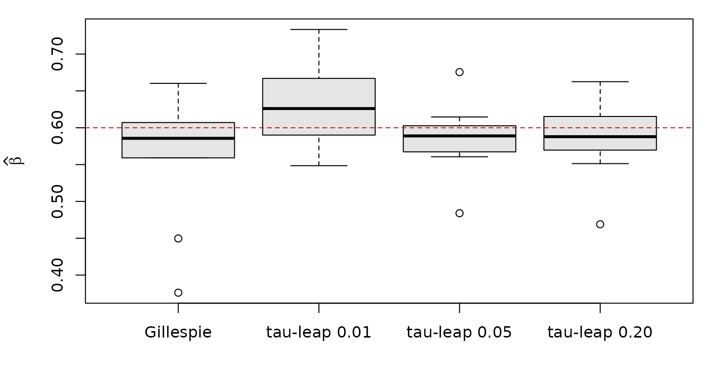

Simulation
amorem exposes a single front-door simulator,
simulate_relational_events(), that composes five mechanisms
on top of an event-by-event inner loop. Two algorithms drive the loop:
Gillespie (exact, per-event) and
τ-leap (approximate, fixed time slices). The two are
compared at the bottom of this page. The examples on this page run when
the page is built.
The five mechanisms
- Minimal Gillespie — homogeneous baseline rate over all admissible dyads.
- Per-dyad contribution logits — a static S × R matrix of log-rate adjustments (e.g. inter-state distances, role similarities).
- Exogenous sender / receiver covariates — per-actor numeric tables with their effect vectors.
- Endogenous statistics — any subset of the catalogue listed in Endogenous catalogue, updated after each fired event.
- Time-varying global covariates — piecewise-constant modifiers tied to an interval grid, advanced with a boundary-aware Gillespie scheme.
Per-feature argument map
| Feature | Arguments | Notes |
|---|---|---|
| Dyad-level contribution | contribution_logits |
S × R matrix of log-rate contributions |
| Static sender / receiver |
sender_covariates, sender_effects,
receiver_covariates, receiver_effects
|
per-actor tables; effects required |
| Endogenous |
endogenous_stats, endogenous_effects
|
any stat from the catalogue |
| Exp-decay half-life | half_life |
required when any *_exp_decay stat is active |
| Time-varying global |
global_covariates, global_effects
|
piecewise constant on time_start intervals |
| Case–control output |
n_controls, wide
|
≥ 1 activates stratified output; wide = TRUE gives one
row per event |
| Algorithm |
method, tau
|
"gillespie" (exact) or "tau_leap"
|
| Risk-set rule | risk |
"standard" or "remove"
|
Idiomatic calls
Minimal Gillespie
set.seed(1)
ev <- simulate_relational_events(
n_events = 500,
senders = LETTERS[1:6],
receivers = LETTERS[1:6],
baseline_rate = 1)
head(ev)
#> sender receiver time
#> 1 A C 0.02517273
#> 2 B C 0.03002962
#> 3 D E 0.09668795
#> 4 B F 0.11122357
#> 5 C F 0.17902660
#> 6 A C 0.19149479With a homogeneous rate every one of the 30 admissible dyads (no loops) is equally likely, so each dyad fires about 16.7 times on average; here the counts range from 9 to 26. Waiting times are exponential with rate 30 (baseline 1 per dyad), so the log spans 16.97 time units.
Per-dyad contribution logits
A static matrix shifts the log-rate of each dyad. Here dyads whose sender and receiver share a group get a log-rate bonus of 1.5:
actors <- paste0("a", 1:8)
group <- rep(c("x", "y"), each = 4)
logits <- outer(group, group, function(a, b) ifelse(a == b, 1.5, 0))
dimnames(logits) <- list(actors, actors)
set.seed(2)
ev_g <- simulate_relational_events(
n_events = 1000, senders = actors, receivers = actors,
contribution_logits = logits)
within_share <- mean(group[match(ev_g$sender, actors)] ==
group[match(ev_g$receiver, actors)])
within_share
#> [1] 0.74Within-group dyads make up 24 of the 56 admissible dyads; with weight
exp(1.5) they should carry a share of 0.771 of the events,
and the simulated share is 0.740.
Exogenous sender covariates
Per-actor covariates enter through a numeric table with one row per sender and a vector of effects:
actors <- paste0("a", 1:10)
set.seed(3)
activity <- data.frame(activity = seq(-1, 1, length.out = 10))
ev_x <- simulate_relational_events(
n_events = 2000, senders = actors, receivers = actors,
sender_covariates = activity, sender_effects = c(activity = 1))
sent <- as.vector(table(factor(ev_x$sender, levels = actors)))
cbind(activity, sent)
#> activity sent
#> 1 -1.0000000 70
#> 2 -0.7777778 70
#> 3 -0.5555556 98
#> 4 -0.3333333 107
#> 5 -0.1111111 135
#> 6 0.1111111 196
#> 7 0.3333333 233
#> 8 0.5555556 278
#> 9 0.7777778 350
#> 10 1.0000000 463The sender with the highest covariate value sends 463 events and the
one with the lowest 70; their ratio, 6.61, compares with
exp(2) = 7.39 implied by an effect of 1 over a covariate
range of 2.
Endogenous structure
set.seed(4)
ev_e <- simulate_relational_events(
n_events = 1000,
senders = letters[1:10],
receivers = letters[1:10],
endogenous_stats = c("reciprocity_count", "transitivity_count"),
endogenous_effects = c(reciprocity_count = 0.4,
transitivity_count = 0.3))
feats <- endogenous_features(ev_e, stats = c("reciprocity_count",
"transitivity_count"))
summary(feats[, c("reciprocity_count", "transitivity_count")])
#> reciprocity_count transitivity_count
#> Min. : 0.0 Min. :0.000
#> 1st Qu.: 41.0 1st Qu.:5.000
#> Median :165.5 Median :5.000
#> Mean :172.9 Mean :5.432
#> 3rd Qu.:289.8 3rd Qu.:7.000
#> Max. :414.0 Max. :7.000endogenous_features() recomputes the statistics from the
timestamps alone; the simulator applies the same definitions while it
generates the events (the Validation experiments, E5,
compare the two row for row).
Case–control output
Set n_controls = k to emit a stratified case–control
table directly: each fired event becomes one case row paired
with k control rows drawn from the non-event risk
set at that moment, sharing a stratum id.
set.seed(5)
cc <- simulate_relational_events(
n_events = 1200,
senders = paste0("a", 1:20),
receivers = paste0("a", 1:20),
endogenous_stats = "reciprocity_count",
endogenous_effects = c(reciprocity_count = 0.6),
n_controls = 1)
head(cc[order(cc$stratum, -cc$event), ], 4)
#> stratum event sender receiver time reciprocity_count
#> 1 1 1 a2 a14 0.005231605 0
#> 2 1 0 a15 a10 0.005231605 0
#> 3 2 1 a1 a3 0.007413057 0
#> 4 2 0 a17 a20 0.007413057 0
library(survival) # clogit() and strata()
fit <- clogit(event ~ reciprocity_count + strata(stratum), data = cc)
coef(fit)
#> reciprocity_count
#> 0.4690212The conditional-logit estimate from this one sample is 0.469 against
the generating value 0.6. With wide = TRUE (and
n_controls = 1) the same output comes as one row per event,
ready for rem(method = "gam").
Time-varying global covariates
g <- data.frame(time_start = c(0, 2, 5),
weekend = c(0, 1, 0))
set.seed(6)
ev_w <- simulate_relational_events(
n_events = 800,
senders = LETTERS[1:8],
receivers = LETTERS[1:8],
baseline_rate = 1,
global_covariates = g,
global_effects = c(weekend = -1.5))
in_weekend <- ev_w$time >= 2 & ev_w$time < 5
rate_weekend <- sum(in_weekend) / 3
rate_week <- sum(!in_weekend) / (max(ev_w$time) - 3)
c(events_per_unit_weekend = rate_weekend, events_per_unit_otherwise = rate_week)
#> events_per_unit_weekend events_per_unit_otherwise
#> 16.00000 56.92281A boundary-aware Gillespie scheme advances the clock across each
time_start boundary without recording or losing events. The
event rate during the “weekend” interval [2, 5) is 16.0 per
time unit against 56.9 outside it, a ratio of 0.281; the effect of −1.5
implies exp(-1.5) = 0.223. Each row also carries the
covariate value at its time (weekend column).
Engines and the statistic catalogue
Both algorithms update the endogenous state from the realized events.
The post-hoc endogenous_features() evaluates a statistic in
compiled code when it is listed by cpp_supported_stats(),
and in R otherwise:
supported <- cpp_supported_stats()
length(supported)
#> [1] 66
head(supported, 10)
#> [1] "reciprocity" "reciprocity_binary"
#> [3] "reciprocity_count" "transitivity_binary"
#> [5] "transitivity_count" "cyclic_binary"
#> [7] "cyclic_count" "sending_balance_binary"
#> [9] "sending_balance_count" "receiving_balance_binary"Gillespie vs τ-leap
Same scenario in both algorithms: 50 actors, 2,000 events, a
reciprocity_binary effect of 0.6, one control per case, 10
replicates per method. For each replicate we record the wall-clock of
the simulator call and the conditional-logit estimate
clogit(event ~ reciprocity_binary + strata(stratum)).
one_run <- function(seed, method, tau = NULL) {
set.seed(seed)
a <- paste0("a", 1:50)
secs <- system.time(
cc <- simulate_relational_events(
n_events = 2000, senders = a, receivers = a, baseline_rate = 1,
endogenous_stats = "reciprocity_binary",
endogenous_effects = c(reciprocity_binary = 0.6),
n_controls = 1, method = method, tau = tau)
)[["elapsed"]]
fit <- clogit(event ~ reciprocity_binary + strata(stratum),
data = cc)
c(beta = coef(fit)[[1]], seconds = secs)
}
configs <- list(
"Gillespie" = list(method = "gillespie", tau = NULL),
"tau-leap 0.01" = list(method = "tau_leap", tau = 0.01),
"tau-leap 0.05" = list(method = "tau_leap", tau = 0.05),
"tau-leap 0.20" = list(method = "tau_leap", tau = 0.20))
runs <- lapply(configs, function(cfg)
t(vapply(1:10, one_run, numeric(2), method = cfg$method, tau = cfg$tau)))
tab <- t(vapply(runs, function(r) c(beta_mean = mean(r[, "beta"]),
beta_sd = stats::sd(r[, "beta"]),
seconds = mean(r[, "seconds"])),
numeric(3)))
round(tab, 3)
#> beta_mean beta_sd seconds
#> Gillespie 0.563 0.086 0.567
#> tau-leap 0.01 0.636 0.062 0.202
#> tau-leap 0.05 0.585 0.049 0.175
#> tau-leap 0.20 0.587 0.055 0.184
op <- par(mar = c(4, 4.5, 1, 1))
boxplot(lapply(runs, function(r) r[, "beta"]), ylab = expression(hat(beta)),
col = "grey90")
abline(h = 0.6, lty = 2, col = "firebrick")
par(op)The dashed line marks the generating value 0.6; at these settings the four distributions overlap. Across the ten replicates the mean estimate is 0.563 for Gillespie and 0.636, 0.585 and 0.587 for τ = 0.01, 0.05 and 0.20. With 50 actors the baseline alone produces about 2450 events per time unit, so a step of τ = 0.20 contains roughly 490 events that all share the start-of-step state; within a step, a dyad whose reverse fires earlier in the same step does not yet see it. Mean simulator time per run is 0.57 s for Gillespie and 0.17–0.20 s for τ-leap.
When to pick which
| Use Gillespie when | Use τ-leap when |
|---|---|
| Every event must react to every prior event | Events within a step may share the start-of-step state |
The model has effects that grow without bound (e.g. a large
reciprocity_count effect), which τ-leap draws in large
batches |
Wall-clock matters and τ has been checked against a small Gillespie run |
When a single step would draw more than ten million events,
simulate_relational_events() stops with a message instead.
Choose τ so that the expected number of events per step is small
relative to the size of the process, and check it against a Gillespie
run of the same model; the Validation experiments report the
wall-clock scaling with the number of actors.
Related pages
- Validation experiments — the full wall-clock scaling grid and parity tests.
-
Sampling options — the risk-set
options of
sample_non_events()for case-control samples drawn from an observed log. -
Estimation — how to use the
case-control output produced by
n_controls ≥ 1.